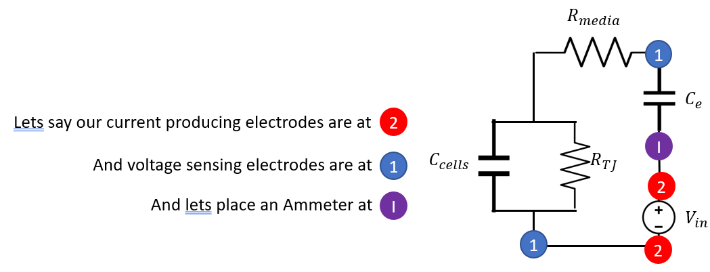

The DC analysis section is interesting, but not practical. The charge build up on membranes is a health hazard to the cells and it still depends on measuring within a time window. Too fast and charge has not sufficiently built
up on the cells membrane to force all of the current through the tight junctions. Too slow and and the current can become too low to accurately measure.
To address these concerns and to extract more components, we turn to AC analysis.

We are still using the 4 electrode circuit, but we just use AC current instead of DC.
Z=Z1+Z2(1)
Z1=Rmed+ω∗Ce−j(2)
Where -j is imaginary i (standard syntax for electronics as i is typically a current value) and omega is angular freq.
Now lets turn to the opposite end of the spectrum and find the solution at small omegas
atω≪1,Xbase≈1,Rbase≈RTJ+Rmedia(12)
and
α≈1,β=ω∗Ce1(13)
thus
Z≈2∗(RTJ+Rmedia)2+∗1ω∗Ce2≈ω∗Ce1(14)
In summary
ifω≫1,Z≈Rmediaandatω≪1,Z≈ω∗Ce1(15)
This allows us to perform something called impedence spectroscopy. At low freq we can determine the electrode capacitance and at high freq we can determine the resistance in the media. Subbinng those terms in and doing
a regression to the full solution allows us to determine the cell capacitance and tight junctional resistance. Notice too in this method that nothing was time depended and thus no integrals to perform over hard to determine variables.
Below is a sample spectra of impedences from the full solution.